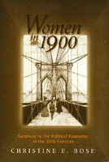

<body bgcolor="#FFFFFF" text="#000000" link="#0000FF" vlink="#CC0000" alink="#CC0000"><center><hr width="350" size="1" align="center" noshade>An exploration of women's place in the U.S. political economy<hr width="350" size="1" align="center" noshade><p><a href="https://cdcshoppingcart.uchicago.edu/Cart/ChicagoBook.aspx?ISBN=9781566398374&&PRESS=temple" target="_top">Buy this book!</a> | <a href="https://cdcshoppingcart.uchicago.edu/Cart/Cart.aspx?PRESS=temple" target="_top">View Cart</a> | <a href="https://cdcshoppingcart.uchicago.edu/Cart/Cart.aspx?PRESS=temple" target="_top">Check Out</a></p><p></p></center><!--none//--><h1>Women in 1900</h1>
<H2>Gateway to the Political Economy of the 20th Century</H2>
<h3>Christine E. Bose</h3>
<P>cloth 1-56639-837-1 $90.50, Feb 01, <FONT COLOR=#990033>Available</FONT>
<br>paper 1-56639-838-X $32.95, Feb 01, <FONT COLOR=#990033>Available</FONT>
<br>Electronic Book 1-59213-782-2 $32.95 <FONT COLOR=#990033>Available</FONT>
<BR> 272 pp
5x8
2&nbsp;map(s)
</P><BLOCKQUOTE><I>"...mak[ing] an important contribution to our historical understanding of women's pursuits and the ways their employment was shaped by ethnicity and race, class, family composition, regional location, and work opportunities. It will be a useful addition to courses aimed at upper-division undergraduates, in graduate seminars, and for specialists."</i>
<br>&#151<b><i>Work and Occupations</i></b><I></I></BLOCKQUOTE>
<p>The past is more relevant to the present than we often believe. There are historical roots to seemingly new concerns, frequently raised as social problems, which connect the beginning and the end of the twentieth century.
<p>For example, ethnic enclaves, which provided employment networks for women, existed in domestic work long before their recent rediscovery among ethnic men. Female-headed households and single mothers have also been around for a long time, but in 1900 they had to support themselves in the absence of large state or federal welfare programs.
<p>By creatively re-analyzing census data, the author explores women's place in the U.S. political economy at the beginning of the twentieth century, viewed from the national level, but also highlighting the variations in women's experiences according to racial ethnic background, class, and geography. Since this past is often used as a baseline for judging changes during the subsequent one hundred years, it is important to understand it on its own terms.
<p>Since this was also a period of economic transformation and high immigration, it is a key time to observe women's changing work options. Among them are the large volume of women's uncounted work in the informal economy; the individual, household, and geographic characteristics that predicted their formal employment; and the occupational segregation experienced by women of differing racial ethnic backgrounds.
<BR>&nbsp;<h2>Excerpt</h2><P>Excerpt available at <a href="http://www.temple.edu/tempress">www.temple.edu/tempress</a></p>
<BR>&nbsp;<h2>Reviews</h2>
<p><i>"Bose's book provides a much-needed opportunity to explore [assumptions about women's work] and to broaden our conceptual framework for examining them.... I thoroughly enjoyed and learned from Bose's analysis and her writing, and I am certain that my students will as well."</i>
<br>&#151;<b><i>Gender and Society</i></b>
<p><i>"Bose's detailed findings deserve the attention of scholars of women's situation, and hopefully will lead to further comparisons with contemporary analyses..."</i>
<br>&#151<b><i>Journal of Social History</i></b>
<BR>&nbsp;<h2>Contents</h2><P>
<p>Preface and Acknowledgments
<br>1. Introduction: Understanding the Past to Interpret the Present
<br>2. Home-Based Work and the Informal Economy: The Case of the "Unemployed" Housewife
<br>3. Race, Ethnicity, Class, and Gender: Determining Women�s Employment
<br>4. Occupational Concentration: The Links Between Occupational Sex and Race Segregation
<br>5. Ethnic Enclaves and Ethnic Queues: Women and Domestic Work
<br>6. Female-Headed Households and the �Hidden� Headship of Single Mothers: Strategies for an Era Without Government Support
<br>7. Regional Segregation: Geography as a Context for Work
<br>8. Epilogue
<br>Appendix: Supplementary Tables
<br>Notes
<br>References
<br>Index
</P><BR>&nbsp;<H2>About the Author(s)</H2>
<table><tr><td valign="top"><img src="/tempress/authors/1305_au.gif" height="90" width="75"></td><td width="100%" valign="middle"><p><B>Christine E. Bose</B>, Professor of Sociology and Women's Studies, University at Albany, SUNY, is author or editor of five other books, including <I><A HREF="1068_reg.html" TARGET="_top">Women in the Latin American Development Process</A></I> (Temple). She is the current editor of <I>Gender & Society</I>.</P></td></tr></table>
<BR><H2>Subject Categories</H2>
<p><A HREF="/tempress/women.html" TARGET="_top">Women's Studies</a>
<BR><A HREF="/tempress/political.html" TARGET="_top">Political Science and Public Policy</a>
</p>
<BR><h2 class="inpageheading">In the series</H2>
<P><I><a href="http://www.temple.edu/tempress/women_political.html" onMouseOver="window.status='Click for other books in this series!'; return true;" onMouseOut="window.status=''; return true;" target="_top">Women in the Political Economy</a></i>, edited by Ronnie J. Steinberg.
</p><p>No longer active.<p><i>Women in the Political Economy</i>, edited by Ronnie J. Steinberg, includes books on women and issues of work, family, social movements, politics, feminism, and empowerment. It emphasizes women's roles in society and the social construction of gender and also explores current policy issues like comparable worth, international development, job training, and parental leave.</p>
<p align="center"><a href="https://cdcshoppingcart.uchicago.edu/Cart/ChicagoBook.aspx?ISBN=9781566398374&&PRESS=temple" target="_top">Buy this book!</a> | <a href="https://cdcshoppingcart.uchicago.edu/Cart/Cart.aspx?PRESS=temple" target="_top">View Cart</a> | <a href="https://cdcshoppingcart.uchicago.edu/Cart/Cart.aspx?PRESS=temple" target="_top">Check Out</a></p><p><font face="Arial" size="1"><a href="copyright.html" onMouseOver="window.status='Web Copyright Policy';return true;" onMouseOut="window.status=''" title="Web Copyright Policy">&copy;</a> 2015 <a href="http://www.temple.edu" target="new" onMouseOver="window.status='Link to Temple University home page';return true;" onMouseOut="window.status=''" title="Link to Temple University home page">Temple University</a>. All Rights Reserved. http://www.temple.edu/tempress/titles/1305_reg.html</font></p>